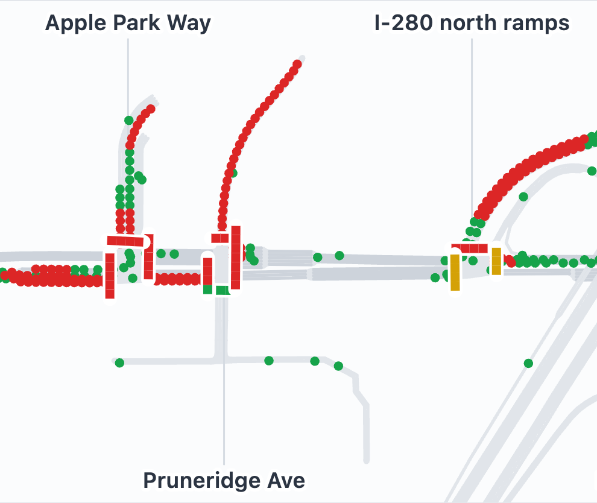
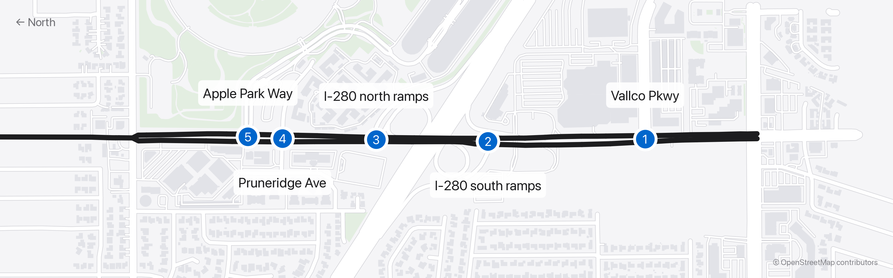
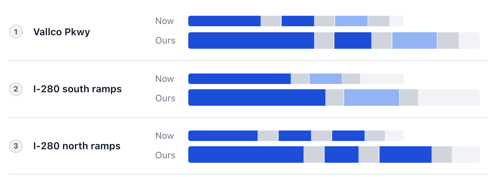
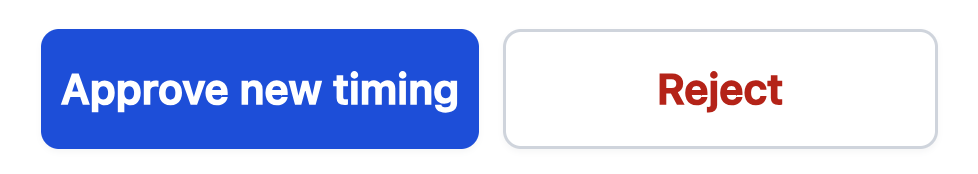
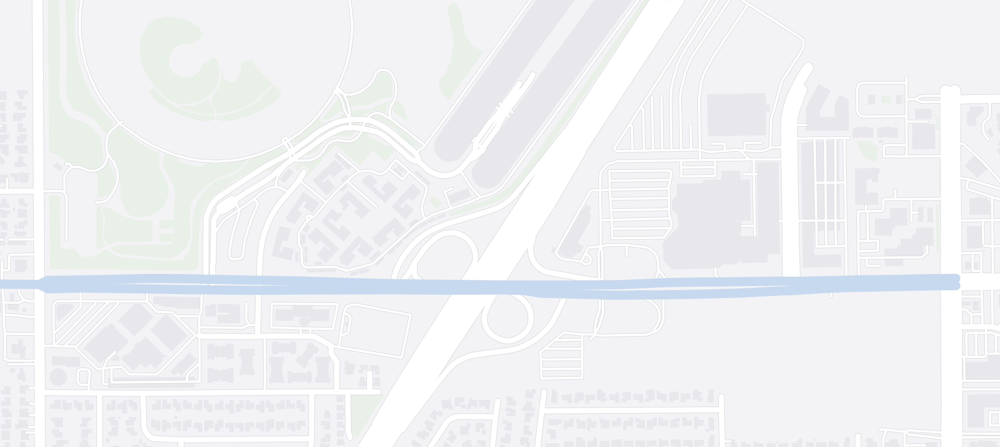
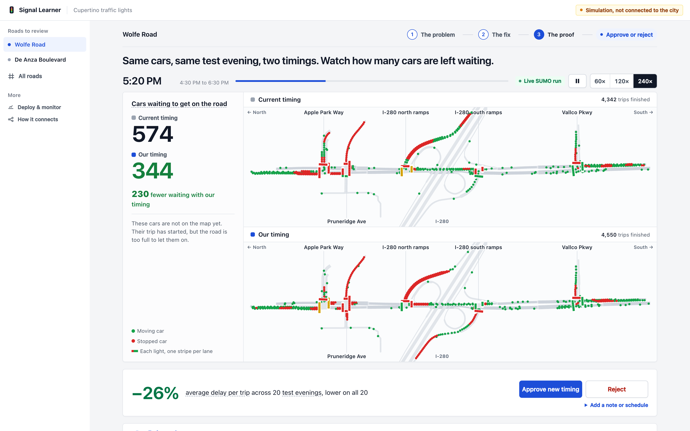
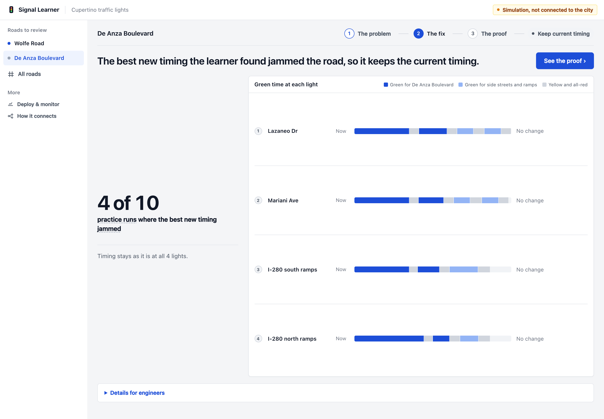

1Count the carsFrom road sensors


The city told us“Stevens Creek Blvd is running time of day plans.”City of Cupertino, Nov 2026
Signal Learner
Advaita, Saarth and PrithviMonta Vista AI Club hackathon






Cars waitingCurrent timing vs ours
The proof−26% delay per trip, lower on all 20 test evenings
The engineer decidesApprove or reject
less delay per trip on Wolfe Road
Simulated evenings on a road the tool never practiced on

The engineer decides. It never touches a real light.
Advaita, Saarth and PrithviMonta Vista AI Club hackathon
Slides after this are backup, for questions only
A guess on the practice copy, used only to pick the plan
137.6 → 79.6 s per trip
The one test evening you watch in the console
856.0 → 650.2 s per trip
20 new evenings, lower in all 20. The only result
870.5 → 643.1 s per trip, average
No field test or city timing comparison
Wolfe Road. Seconds are delay per trip. All simulated.
| Road | Used for | Traffic |
|---|---|---|
| Stevens Creek Blvd | Building the learner | VTA 2024 counts at De Anza and Stelling |
| Homestead Rd | Building the learner | Generated |
| Wolfe Rd, 5 lights | Final test | Generated, hidden from the learner |
| De Anza Blvd, 4 lights | Final test | Generated, hidden from the learner |
None of the old plans is Cupertino's current timing. VTA counts courtesy of the Santa Clara Valley Transportation Authority (VTA, 2024 CMP Monitoring and Conformance Report).
Car counts and how long detectors stay covered, every 5 min
Routes that reproduce those counts become the practice copy
150 tries, each picked using the scores of earlier tries
Rechecked on 10 more practice runs before it reaches the card
Not a neural network. Not a chatbot. It picks a plan offline and never switches lights live.
Made-up traffic and the modeled old timing
150 tries
future check, not connected
Delay score = delay of finished trips
+ 900 s (15 min) for each unfinished trip and each stuck-car move
÷ every requested trip
Made-up example, not real data
3 trips. Two finish with 60 s and 120 s of delay. One never finishes.
(60 + 120 + 900) ÷ 3 = 360 s of delay per trip
Delay includes time spent waiting to enter the road.
Jam check: at most 2 more stuck-car moves than the old timing on each run. Delay per trip is the average over the evenings. The later check came after the main test.
less delay per trip
870.5 → 643.1 s, average of 20 test evenings
more delay per trip
Worst-origin delay score 2,565.8 → 2,768.6 s
Worst-origin delay score: on each test evening, the delay per trip at the start point that did worst, then averaged over the 20 evenings.
Adaptive control that responds to traffic
Adapts timing to real-time demand
Each intersection schedules, and shares with neighbors
Recommendations to city engineers. Closest to us
What we built is a small simulation an engineer can inspect, and it can say no change. Not a better controller.
Why Cupertino needs this, who the user is, what comes next
What the AI is, whether the test is fair, what −26% means
Signal hardware, city fit, safety, existing systems
less delay per trip, average of 20 test evenings, lower on all 20
Seconds of delay per trip: 870.5 → 643.1 s